Biomes
En Minecraft es possible trobar mols
biomes diferents, en qls quals cadascun
t'ofereix recurços i materials diferents.
Podem trobar el bioma natural del joc el qual te l'aspecte d'un prat amb arbres, també podem trobar
biomes de jungla, sabana, desert i roca taronja.
Hi han molt més biomes, però quests són els principal.
L'end i el nether, són 2 biomes diferents als altres. ja que són com dos mons paral·lels.
 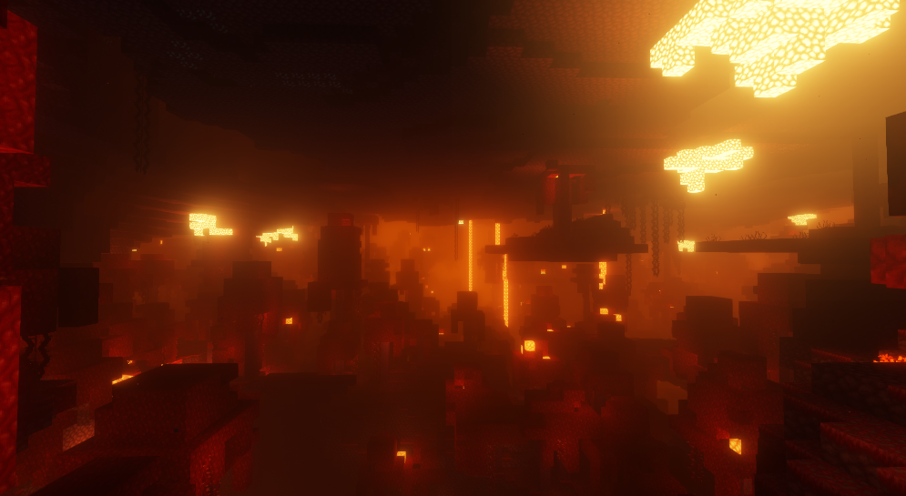
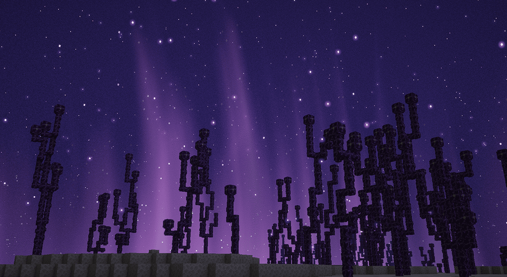
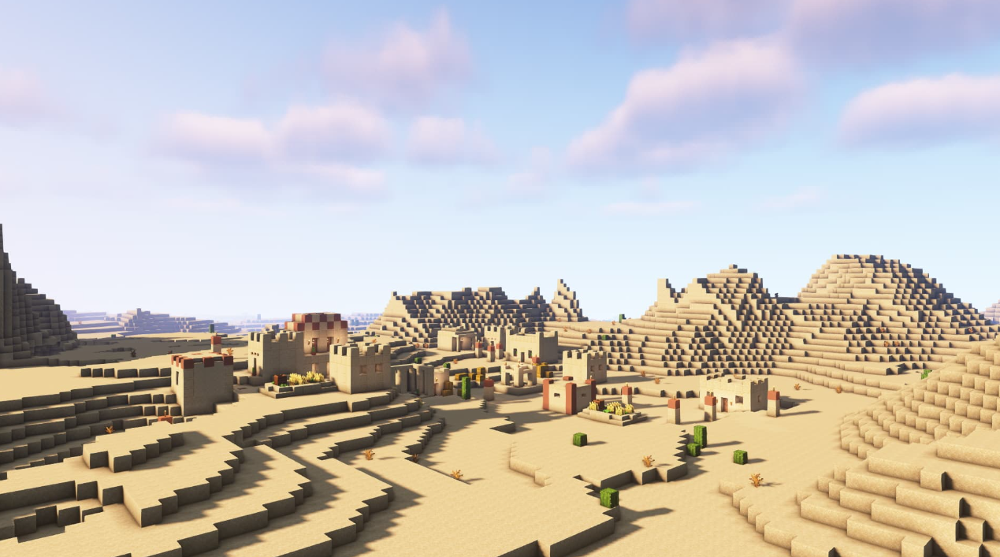
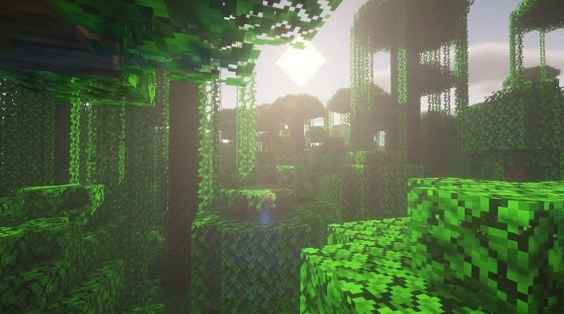
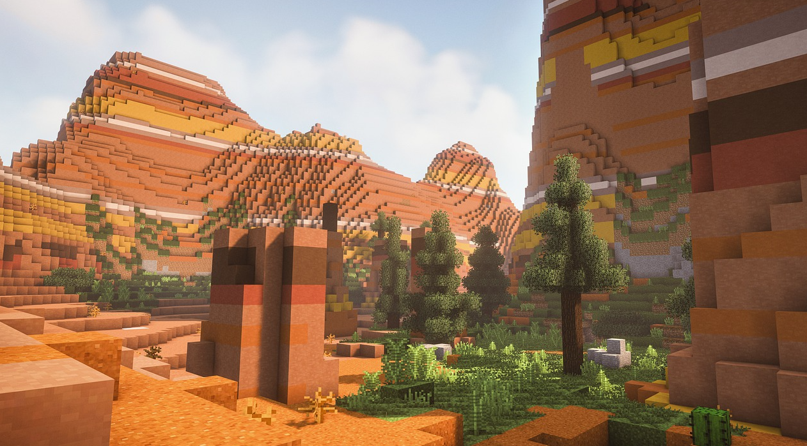
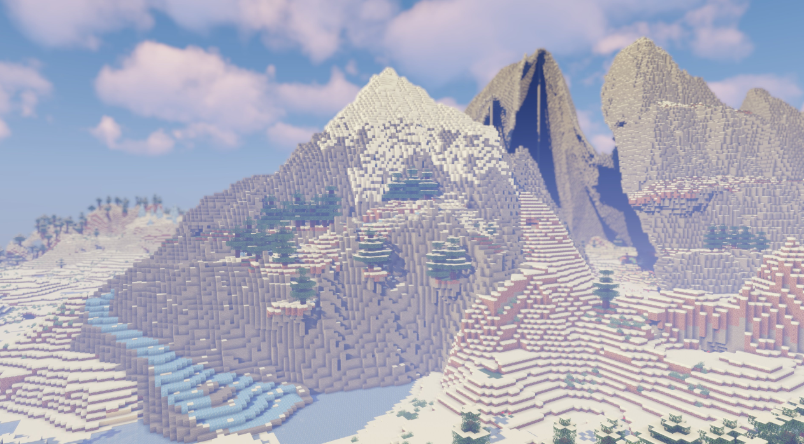
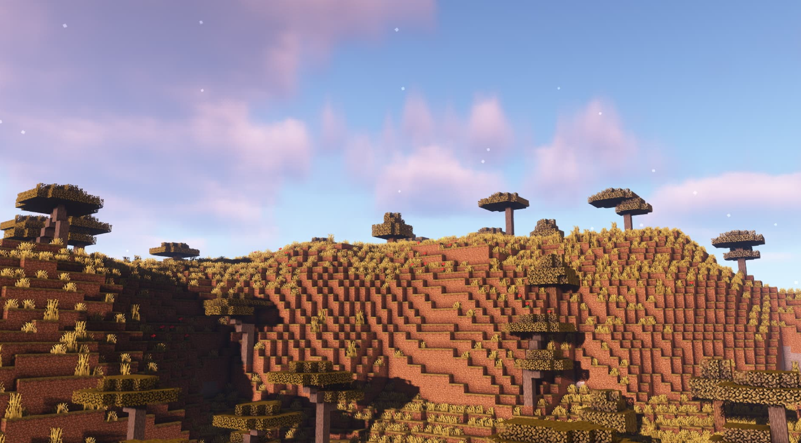
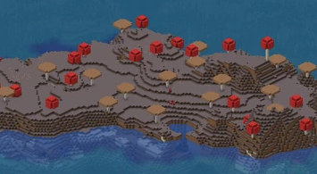
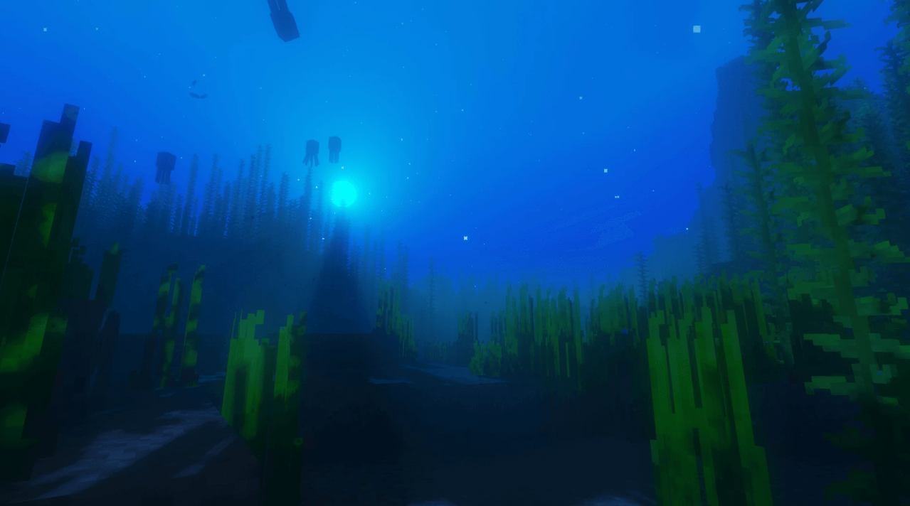
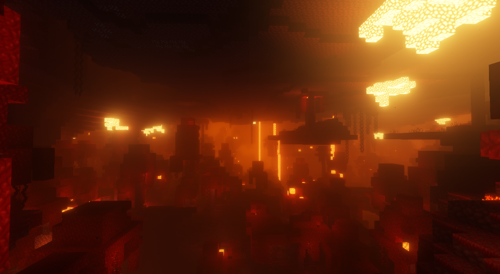
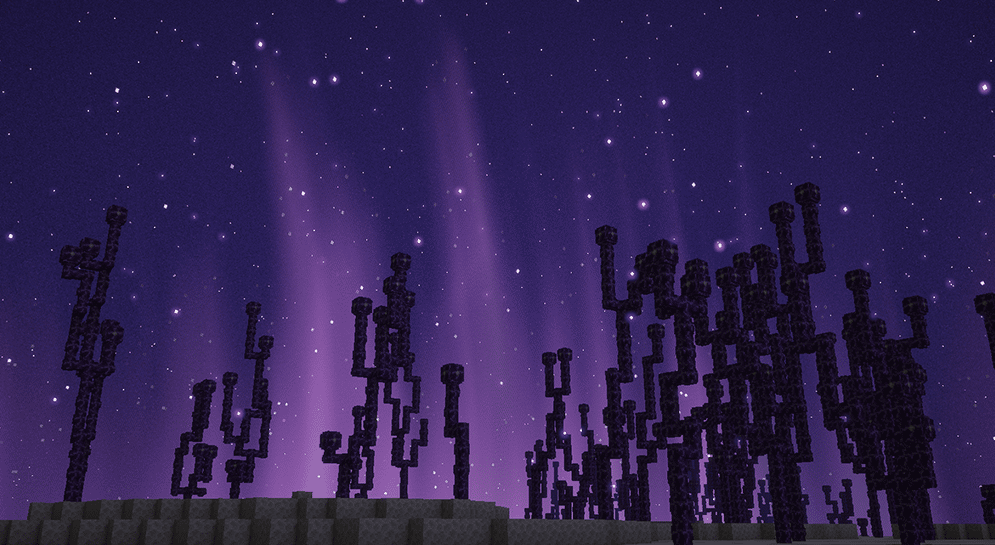
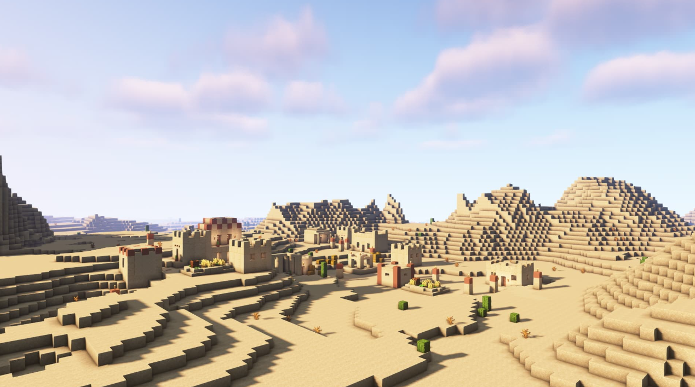
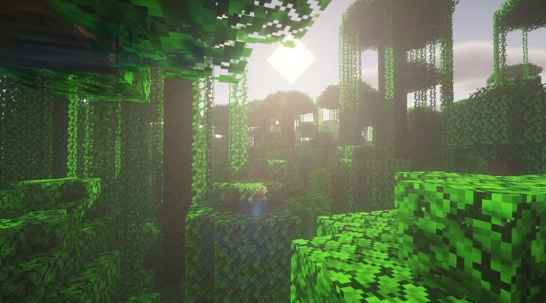
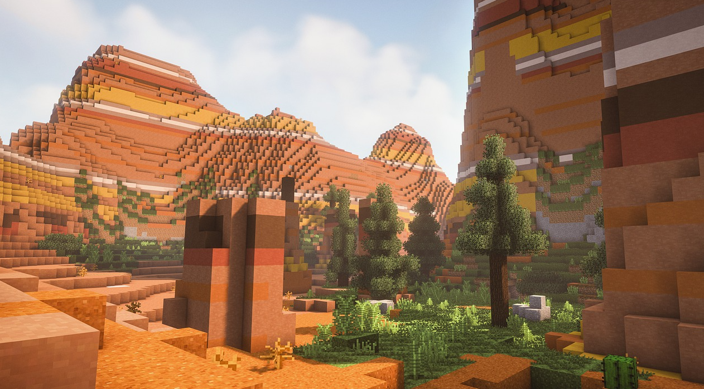
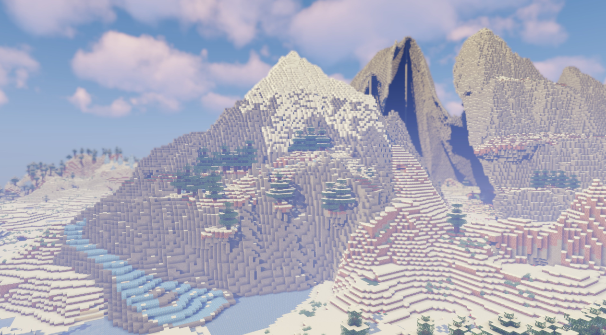
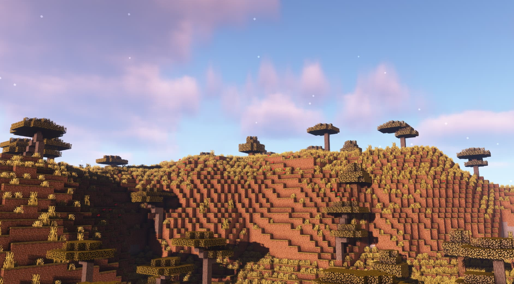
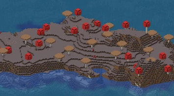
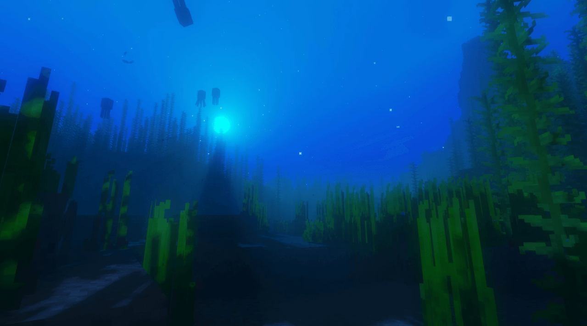